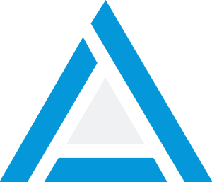

Ferramenta de Segmentação de Públicos para Facebook Ads
Crie públicos segmentados e precisos, baseados em dados reais. AdSegmentor ajuda você a encontrar o público ideal para suas campanhas no Facebook Ads, aumentando conversões e reduzindo custos.
Bem-vindo ao AdSegmentor, a ferramenta que gera automaticamente os públicos perfeitos para cada campanha.
Desenvolvemos o AdSegmentor para criar públicos segmentados no Facebook Ads, baseados nas suas informações de briefing. Economize tempo e maximize o ROI, focando nas estratégias enquanto nossa ferramenta entrega os públicos ideais.


Com o AdSegmentor, você tem acesso a segmentações precisas e configurações exclusivas para alcançar o público certo no Facebook Ads. Escolha os melhores segmentos e aplique exclusões estratégicas para maximizar seus resultados.
AdSegmentor permite que você crie públicos que se adaptam ao seu briefing. Não importa o nicho ou objetivo da campanha, temos o público certo para cada estratégia.